library(readr)
library(ggplot2)
library(dplyr)
library(scales)
theme_set(theme_bw()) # create a simpler default themeA Vocabulary of Marks
Examples of encodings and sequential refinement of a plot.
The choice of encodings can have a strong effect on (1) the types of comparisons that a visualization suggests and (2) the chance that readers leave with complete and accurate conclucions. With this in mind, it’s worthwhile to develop a rich vocabulary of potential visual encodings.
So, let’s look at a few different types of encodings available in
ggplot2. Before we get started, let’s load up the libraries that will be used in these notes.ggplot2is our plotting library.readris used to read data files from a web link, anddplyris useful for some of the data manipulations below (we dive into it deeply in Week 2).
Point Marks
- Let’s read in the gapminder dataset, which describes the changes in standard of living around the world over the last few decades. The
%>%“pipe” operator takes the output of the previous command as input to the next one – it is useful for chains of commands where the intermediate results are not needed. Themutatecommand makes sure that the country group variable is treated as a categorical, and not numeric, variable.
gapminder <- read_csv("https://uwmadison.box.com/shared/static/dyz0qohqvgake2ghm4ngupbltkzpqb7t.csv", col_types = cols()) %>%
mutate(cluster = as.factor(cluster)) # specify that cluster is nominal
gap2000 <- filter(gapminder, year == 2000) # keep only year 2000- Point marks can encode data fields using their \(x\) and \(y\) positions, color, size, and shape. Below, each mark is a country, and we’re using shape and the \(y\) position to distinguish between country clusters.
ggplot(gap2000) +
geom_point(aes(x = fertility, y = cluster, shape = cluster))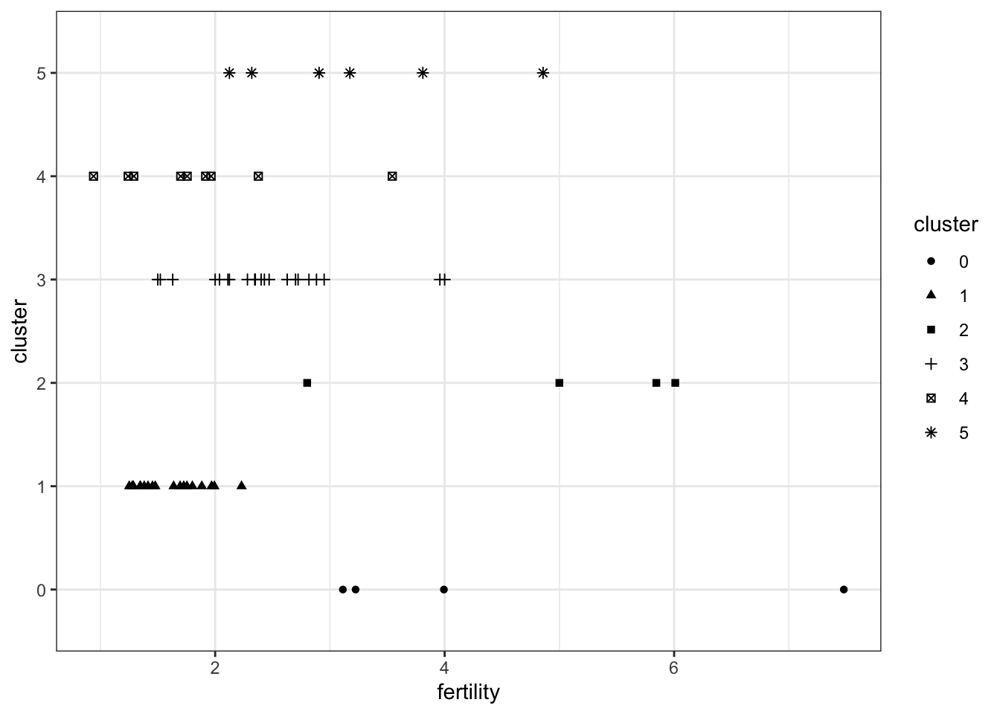
Since the first two arguments in aes are always the x and y positions, we can omit it from our command. The code below produces the exact same plot (try it!).
ggplot(gap2000) +
geom_point(aes(fertility, cluster, shape = cluster))- We can specify different types of shapes using the
shapeparameter outside of theaesencoding.
ggplot(gap2000) +
geom_point(aes(fertility, cluster), shape = 15)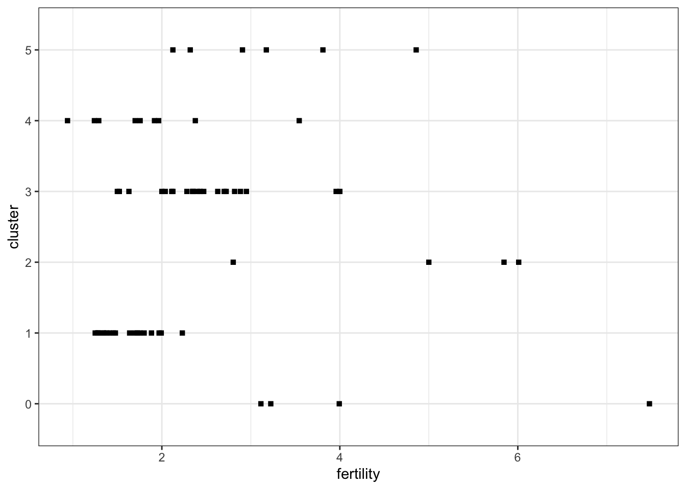
Bar Marks
- Bar marks let us associate a continuous field with a nominal one.
ggplot(gap2000) +
geom_bar(aes(country, pop), stat = "identity")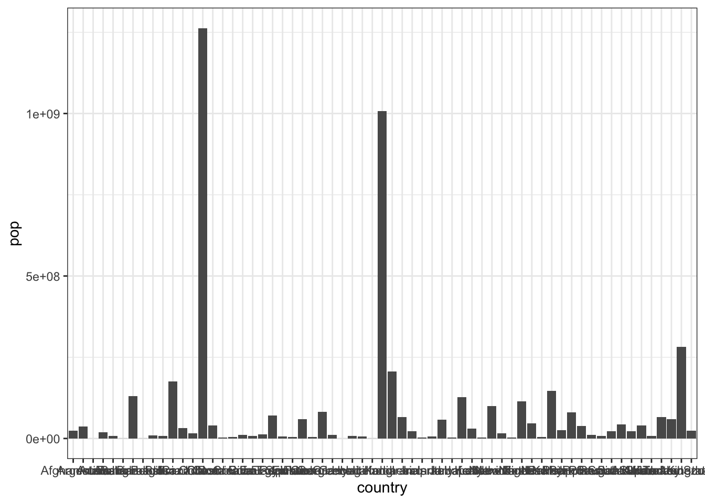
The plot above is messy – it would not be appropriate for a publication or presentation. The grid lines associated with each bar are distracting. Further, the axis labels are all running over one another. For the first issue, we can customize the theme of the plot. Note that we don’t have to memorize the names of these arguments, since they should autocomplete when pressing tab (we just need to memorize the first few letters).
ggplot(gap2000) +
geom_bar(aes(country, pop), stat = "identity") +
theme(panel.grid.major.x = element_blank())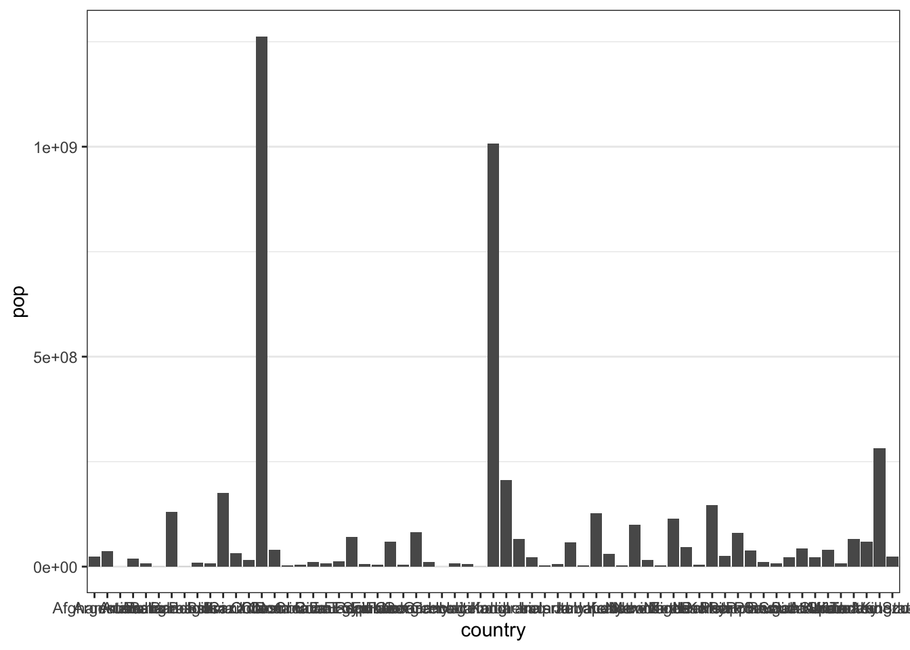
For the second issue, one approach is to turn the labels on their side, again by customizing the theme.
ggplot(gap2000) +
geom_bar(aes(country, pop), stat = "identity") +
theme(
axis.text.x = element_text(angle = 90),
panel.grid.major.x = element_blank()
)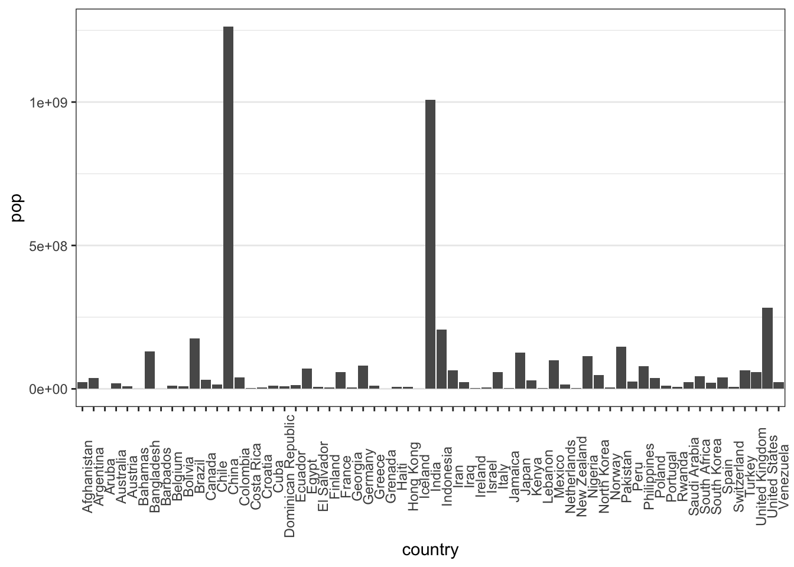
An approach I like better is to turn the bars on their side. This way, readers don’t have to tilt their heads to read the country names.
ggplot(gap2000) +
geom_bar(aes(pop, country), stat = "identity") +
theme(panel.grid.major.y = element_blank()) # note change from x to y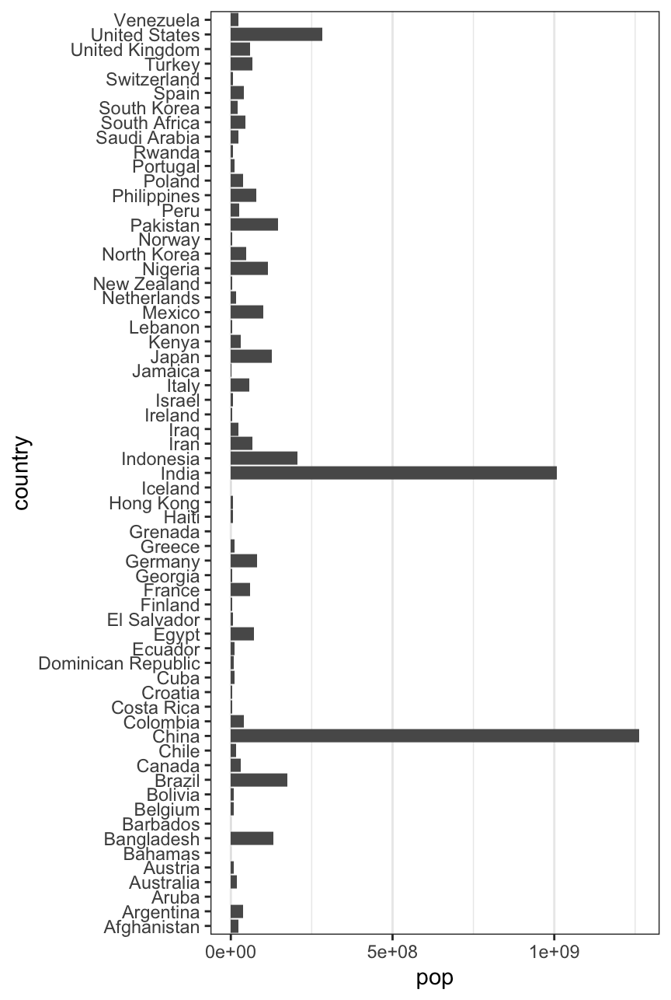
I’m also going to remove the small tick marks associated with every name, again because it seems distracting.
ggplot(gap2000) +
geom_bar(aes(pop, country), stat = "identity") +
theme(
panel.grid.major.y = element_blank(),
axis.ticks = element_blank() # remove tick marks
)To make comparisons between countries with similar populations easier, we can order them by population (alphabetical ordering is not that meaningful). To compare clusters, we can color in the bars.
::: {.cell}
ggplot(gap2000) + geom_bar(aes(pop, reorder(country, pop), fill = cluster), stat = "identity") + theme( axis.ticks = element_blank(), panel.grid.major.y = element_blank() )::: {.cell-output-display} 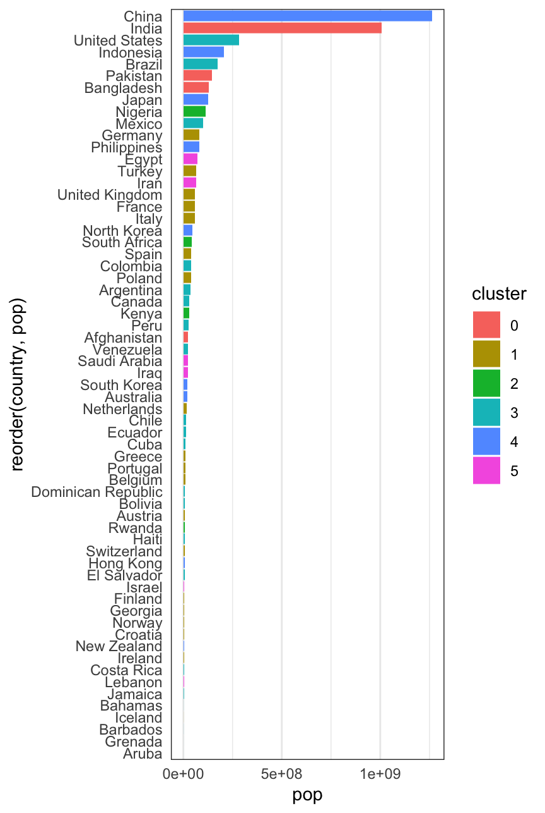 ::: :::
We’ve been spending a lot of time on this plot. This is because I want to emphasize that a visualization is not just something we can get just by memorizing some magic (programming) incantation. Instead, it is something worth critically engaging with and refining, in a similar way that we would refine an essay or speech.
Philosophy aside, there are still a few points that need to be improved in this figure,
- The axis titles are not meaningful.
- There is a strange gap between the left hand edge of the plot and the start of the bars.
- I would also prefer if the bars were exactly touching one another, without the small vertical gap.
- The scientific notation for population size is unnecessarily technical.
- The color scheme is a bit boring.
I’ll address each of these in a separate code block, with comments on the parts that are different. First, improving the axis titles,
::: {.cell}
ggplot(gap2000) + geom_bar(aes(pop, reorder(country, pop), fill = cluster), stat = "identity") + labs(x = "Population", y = "Country", fill = "Country Group") + # add better titles theme( axis.ticks = element_blank(), panel.grid.major.y = element_blank() )::: {.cell-output-display} 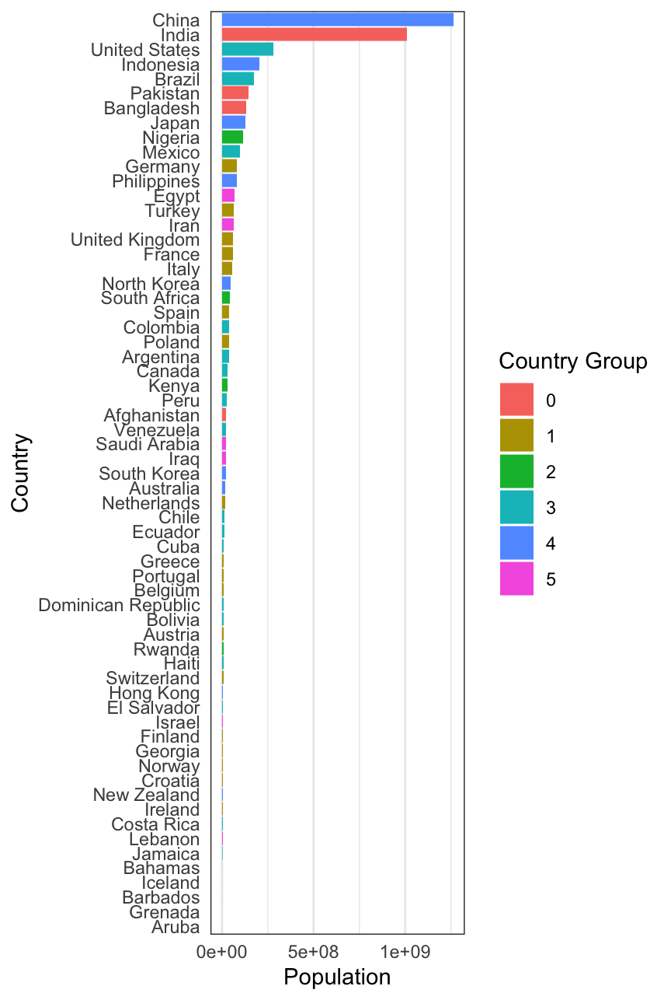 ::: :::
Now we remove the gap. I learned this trick by googling it – there is no shame in doing this! A wise friend of mine once shared, “I am not a programming expert, just an expert at StackOverflow.”
::: {.cell}
ggplot(gap2000) + geom_bar(aes(pop, reorder(country, pop), fill = cluster), stat = "identity") + scale_x_continuous(expand = c(0, 0, 0.1, 0.1)) + # remove space to the axis labs(x = "Population", y = "Country", fill = "Country Group") + theme( axis.text.y = element_text(size = 6), axis.ticks = element_blank(), panel.grid.major.y = element_blank() )::: {.cell-output-display} 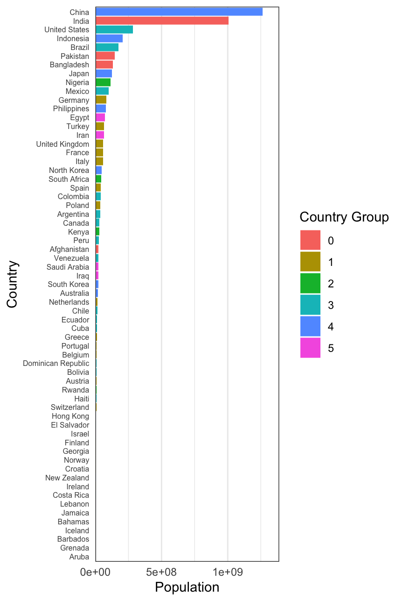 ::: :::
Now, removing the gaps between bars.
::: {.cell}
ggplot(gap2000) + geom_bar( aes(pop, reorder(country, pop), fill = cluster), width = 1, stat = "identity" # increase width of bars ) + scale_x_continuous(expand = c(0, 0, 0.1, 0.1)) + labs(x = "Population", y = "Country", fill = "Country Group", color = "Country Group") + theme( axis.ticks = element_blank(), panel.grid.major.y = element_blank() )::: {.cell-output-display} 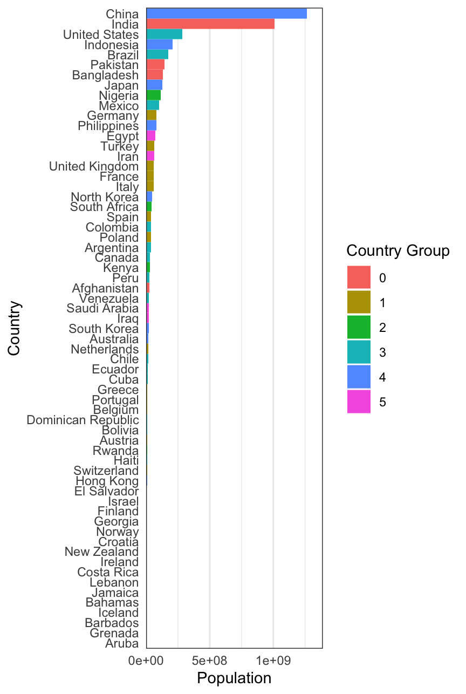 ::: :::
Now, we remove scientific notation,
::: {.cell}
ggplot(gap2000) + geom_bar( aes(pop, reorder(country, pop), fill = cluster), width = 1, stat = "identity" ) + scale_x_continuous(label = label_number(scale_cut = cut_short_scale()), expand = c(0, 0, 0.1, 0.1)) + # remove scientific notation. ::omma() is also useful. labs(x = "Population", y = "Country", fill = "Country Group", color = "Country Group") + theme( axis.ticks = element_blank(), panel.grid.major.y = element_blank() )::: {.cell-output-display} ::: :::
Finally, we customize the colors. I often like to look up neat colors on color.adobe.com, iwanthue or colorhexa, but there are dozens of similar colorpicker sites out there.
::: {.cell}
ggplot(gap2000) + geom_bar( aes(pop, reorder(country, pop), fill = cluster), width = 1, stat = "identity" ) + scale_x_continuous(label = label_number(scale_cut = cut_short_scale()), expand = c(0, 0, 0.1, 0.1)) + # remove scientific notation. comma() is also useful. scale_fill_manual(values = c("#80BFA2", "#7EB6D9", "#3E428C", "#D98BB6", "#BF2E21", "#F23A29")) + labs(x = "Population", y = "Country", fill = "Country Group", color = "Country Group") + theme( axis.ticks = element_blank(), panel.grid.major.y = element_blank() )::: {.cell-output-display} 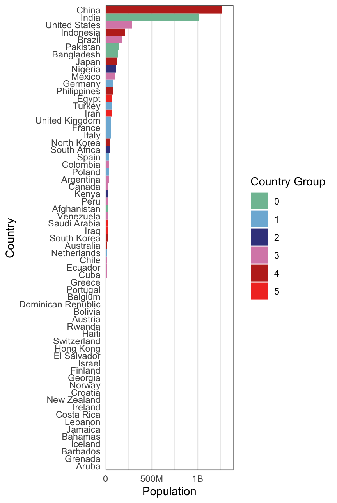 ::: :::
This seems like a lot of work for just a lowly bar plot! But I think it’s amazing customizable the figure is – we can give it our own sense of style. With a bit of practice, these sorts of modifications will become second nature, and it won’t be necessary to keep track of all the intermediate code. And really, even though we spent some time on this plot, there are still many things that could be interesting to experiment with, like font styles, background appearance, maybe even splitting the countries into two panels.
In the plot above, each bar is anchored at 0. Instead, we could have each bar encode two continuous values, a left and right. To illustrate, let’s compare the minimum and maximimum life expectancies within each country cluster. We’ll need to create a new
data.framewith just the summary information. For this, wegroup_byeach cluster, so that asummarisecall finds the minimum and maximum life expectancies restricted to each cluster. We’ll discuss thegroup_by+summarisepattern in detail next week.# find summary statistics life_ranges <- gap2000 %>% group_by(cluster) %>% summarise( min_life = min(life_expect), max_life = max(life_expect) ) # look at a few rows head(life_ranges)# A tibble: 6 × 3 cluster min_life max_life <fct> <dbl> <dbl> 1 0 42.1 63.6 2 1 70.5 80.6 3 2 43.4 53.4 4 3 58.1 79.8 5 4 66.7 82 6 5 57.0 79.7ggplot(life_ranges) + geom_segment( aes(min_life, reorder(cluster, max_life), xend = max_life, yend = cluster, col = cluster), size = 5, ) + scale_color_manual(values = c("#80BFA2", "#7EB6D9", "#3E428C", "#D98BB6", "#BF2E21", "#F23A29")) + labs(x = "Minimum and Maximum Expected Span", col = "Country Group", y = "Country Group") + xlim(0, 85) # otherwise would only range from 42 to 82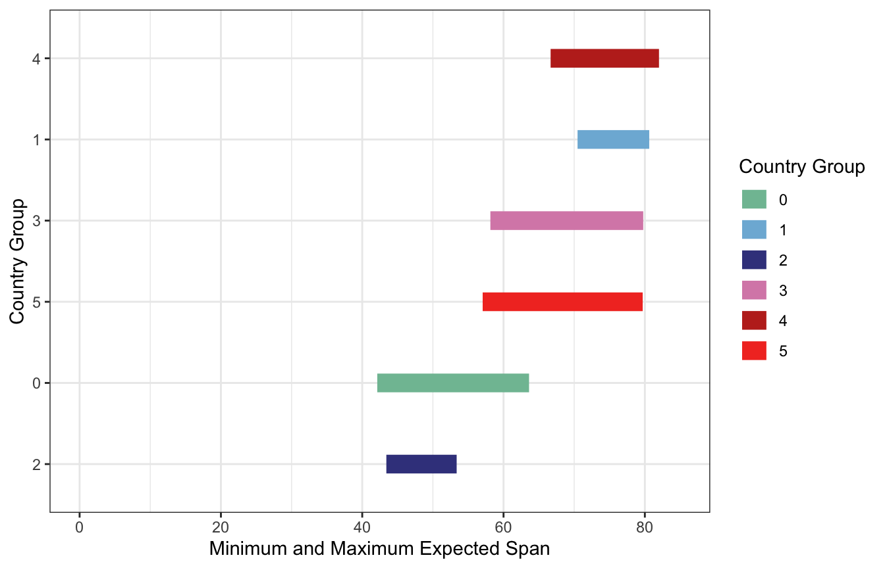
Line Marks
Line marks are useful for comparing changes. Our eyes naturally focus on rates of change when we see lines. Below, we’ll plot the fertility over time, colored in by country cluster. The
groupargument is useful for ensuring each country gets its own line; if we removed it,ggplot2would become confused by the fact that the samex(year) values are associated with multipley’s (fertility rates).ggplot(gapminder) + geom_line( aes(year, fertility, col = cluster, group = country), alpha = 0.7, size = 0.9 ) + scale_x_continuous(expand = c(0, 0)) + # same trick of removing gap scale_color_manual(values = c("#80BFA2", "#7EB6D9", "#3E428C", "#D98BB6", "#BF2E21", "#F23A29"))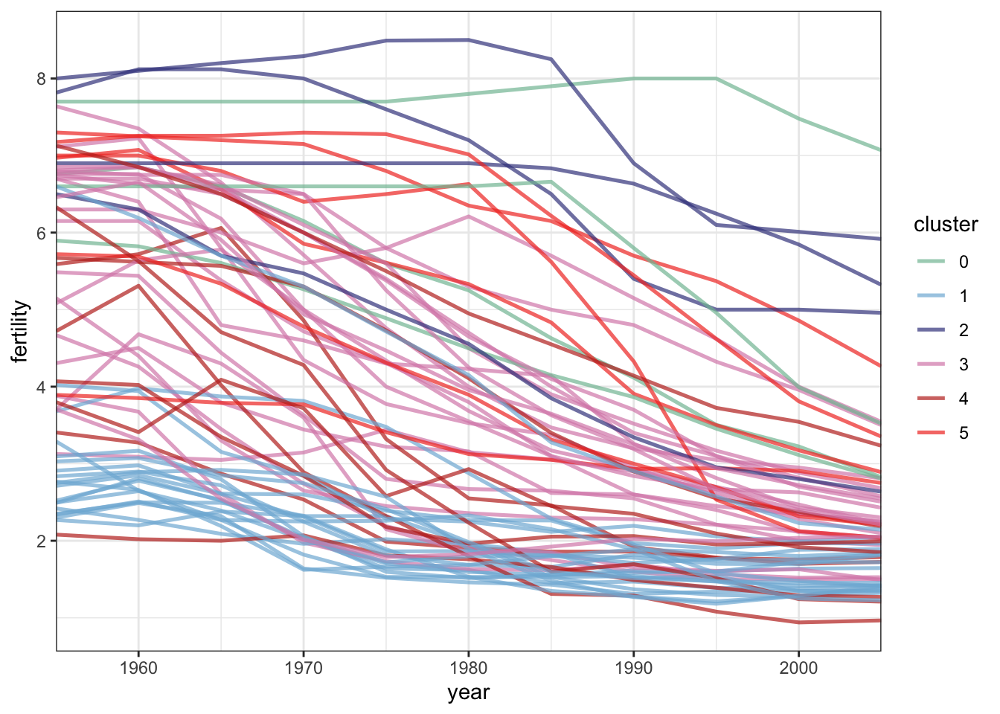
Area Marks
Area marks have a flavor of both bar and line marks. The filled area supports absolute comparisons, while the changes in shape suggest derivatives.
population_sums <- gapminder %>% group_by(year, cluster) %>% summarise(total_pop = sum(pop)) head(population_sums)# A tibble: 6 × 3 # Groups: year [1] year cluster total_pop <dbl> <fct> <dbl> 1 1955 0 495927174 2 1955 1 360609771 3 1955 2 60559800 4 1955 3 355392405 5 1955 4 854125031 6 1955 5 56064015ggplot(population_sums) + geom_area(aes(year, total_pop, fill = cluster)) + scale_y_continuous(expand = c(0, 0, 0.1, 0.1), label = label_number(scale_cut = cut_short_scale())) + # remove scientific notation. scales::comma() is also useful. scale_x_continuous(expand = c(0, 0)) + scale_fill_manual(values = c("#80BFA2", "#7EB6D9", "#3E428C", "#D98BB6", "#BF2E21", "#F23A29"))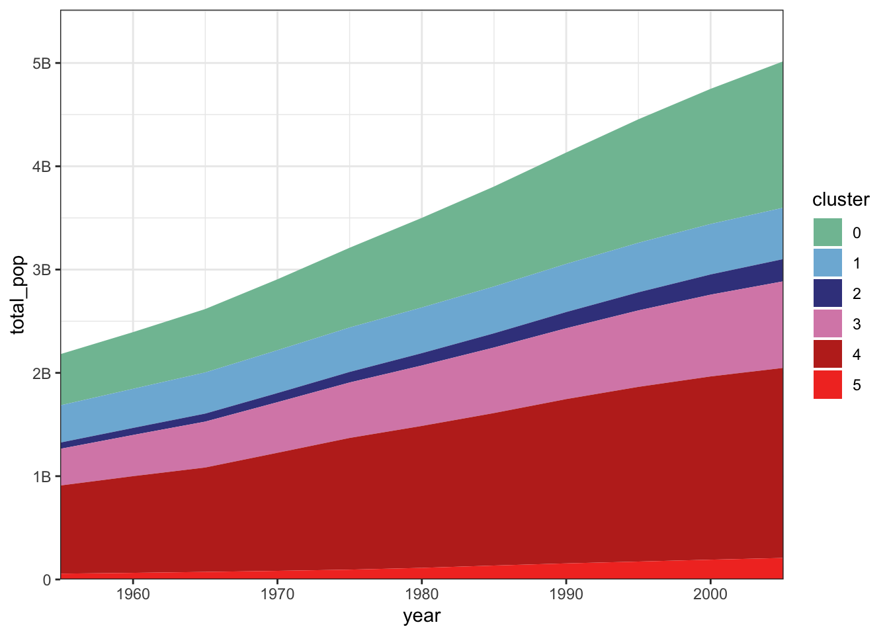
Just like in bar marks, we don’t necessarily need to anchor the \(y\)-axis at 0. For example, here the bottom and top of each area mark is given by the 30% and 70% quantiles of population within each country cluster.
population_ranges <- gapminder %>% group_by(year, cluster) %>% summarise(min_pop = quantile(pop, 0.3), max_pop = quantile(pop, 0.7)) head(population_ranges)# A tibble: 6 × 4 # Groups: year [1] year cluster min_pop max_pop <dbl> <fct> <dbl> <dbl> 1 1955 0 40880121. 83941368. 2 1955 1 4532940 25990229. 3 1955 2 6600426. 17377594. 4 1955 3 2221139 8671500 5 1955 4 9014491 61905422 6 1955 5 3007625 12316126.ggplot(population_ranges) + geom_ribbon( aes(x = year, ymin = min_pop, ymax = max_pop, fill = cluster), alpha = 0.8 ) + scale_y_continuous(expand = c(0, 0, 0.1, 0.1), label = label_number(scale_cut = cut_short_scale())) + # remove scientific notation. scales::comma() is also useful. scale_x_continuous(expand = c(0, 0)) + scale_fill_manual(values = c("#80BFA2", "#7EB6D9", "#3E428C", "#D98BB6", "#BF2E21", "#F23A29"))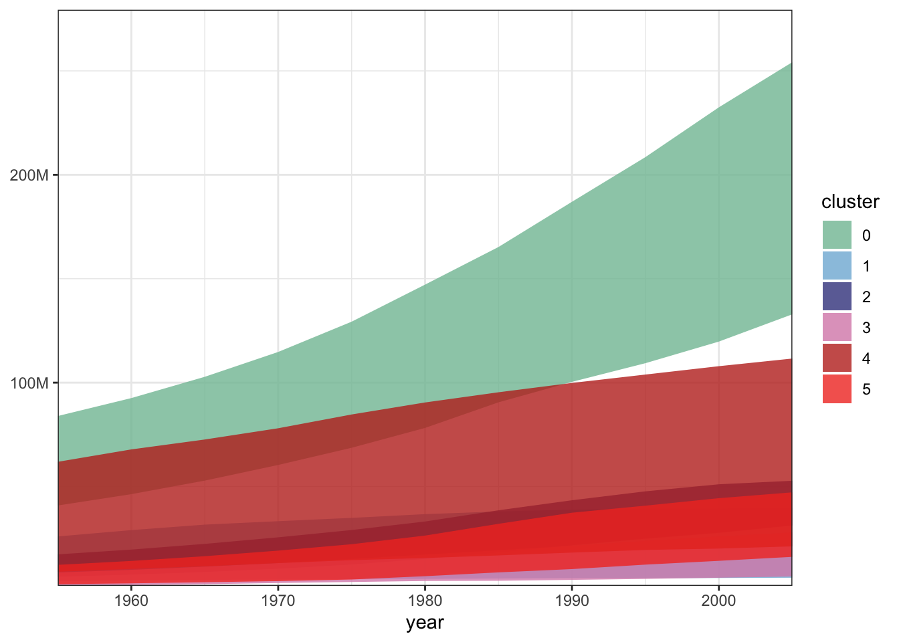